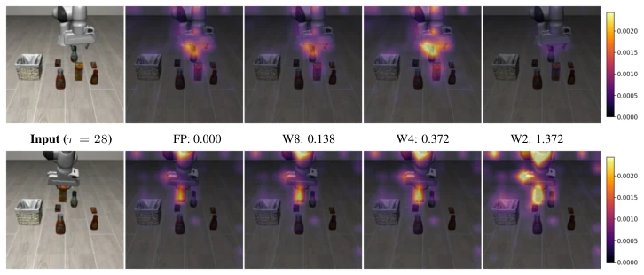
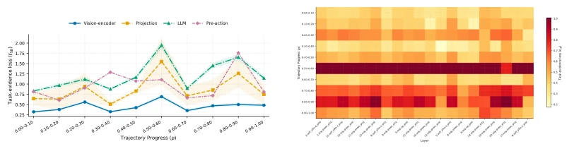

This paper conducts an "internal checkup" on VLA models, examining not only whether actions are correct but also the state of the "brain" (internal evidence). Mix-QVLA employs a clever strategy, upgrading quantization sensitivity from "action error" to "evidence retention", attempting to preserve the integrity of decision logic while compressing the model. On LIBERO, it indeed reduces memory usage and offers acceptable acceleration, yet the concept of "evidence" is somewhat metaphysical, as it is not a causal guarantee; what if internal evidence becomes disordered while actions are guessed correctly? Furthermore, the offline calibration cost is considerable, and precision remains fixed during deployment without dynamic adjustment. Overall, it provides a new solution for edge-side deployment, but one should not expect it to resolve all hallucination issues, as robots cannot survive merely by guessing.
研究动机Motivation
VLA 模型如 OpenVLA (Kim et al., 2024) 虽强大但臃肿，7B 参数半精度就要 14GB，端侧部署难。现有量化方法如 QVLA (Xu et al., 2026a) 主要依赖最终动作偏差估计敏感度，但这有缺陷：量化后动作可能相似，内部支持决策的证据结构却已崩塌，导致闭环控制不稳定。DyQ-VLA (Zheng et al., 2026) 虽考虑时间动态，但仍基于运动学代理。现有方法无法直接衡量量化是否破坏了全精度策略决策的内部证据路径。因此，需要一种能评估功能边界内证据保留的量化框架，确保压缩不牺牲决策逻辑的完整性。
VLA models such as OpenVLA (Kim et al., 2024), while powerful, are bloated; 7B parameters in half-precision require 14GB, making edge-side deployment difficult. Existing quantization methods like QVLA (Xu et al., 2026a) primarily rely on estimating sensitivity based on final action deviation, but this has flaws: after quantization, actions may appear similar, yet the internal evidence structure supporting the decision has collapsed, leading to unstable closed-loop control. DyQ-VLA (Zheng et al., 2026) considers temporal dynamics but is still based on kinematic proxies. Existing methods cannot directly measure whether quantization has disrupted the internal evidence path of full-precision policy decisions. Therefore, a quantization framework capable of assessing evidence retention within functional boundaries is needed to ensure that compression does not sacrifice the integrity of decision logic.
The Mix-QVLA framework comprises three core stages. The first stage is calibration and reference construction, where a fixed full-precision action sequence serves as the decision reference, and normalized hidden states are calculated for each functional boundary (visual encoder, projector, language policy, action head) to eliminate scale effects. The second stage is sensitivity assessment, constructing a gradient-weighted task evidence map that quantifies the distortion of quantization on decision support using evidence quality (total intensity) and evidence allocation (distribution structure), converting boundary losses into layer sensitivity scores via a soft bottleneck aggregation mechanism. The third stage is mixed-precision allocation, introducing a time-aware module that bins trajectory progress to capture sensitivity changes across different execution stages, ultimately assigning optimal bit-widths to each layer via an optimizer under model size and BitOps budget constraints. The core of this method lies in expanding quantization sensitivity from mere action error to the integrity of internal evidence paths, combined with dynamic adjustment along the time dimension, ensuring compression does not disrupt key decision logic.

Figure 1: Visualization of gradient-weighted task-evidence distributions at the vision-encoder output boundary when vision_backbone.featurizer.blocks.6.mlp.fc2 is quantized. The RGB observation and language prompt, “pick up the orange juice and place it in the basket,” are shared across FP and quantized settings; only the task-evidence overlay changes. Heatmaps show the spatial allocation of internal task evidence, and the values below each image denote the corresponding task- evidence loss ℓev. Higher ℓev indicates greater distortion from the full-precision evidence distribution.
Experiments are based on the LIBERO benchmark, covering four task categories: Spatial, Object, Goal, and Long, with models including OpenVLA and OpenVLA-OFT. Comparison baselines include SmoothQuant, OmniQuant, QVLA, and DyQ-VLA. Evaluation metrics comprise task success rate, memory usage, and inference speedup ratio. Under the W4A4 setting, Mix-QVLA achieves a success rate of 96.3% on OpenVLA-OFT, with memory usage of only 4.1GB and a 1.52x speedup, outperforming QVLA's 96.0% and 4.5GB. Ablation studies indicate that the mixed signal combining task evidence and temporal sensitivity yields the best results. However, experiments were verified only in a simulation environment, and quantization allocation remains fixed at deployment, precluding dynamic precision switching.

Figure 3: Temporal task-evidence sensitivity under layer-wise 4-bit quantization. For each candidate layer, only that layer is quantized, while the rest of the VLA model remains full precision. (a) Boundary-wise task-evidence loss over normalized trajectory progress, with shaded regions indicating temporal variability. (b) Temporal sensitivity of the top-20 sensitive layers.